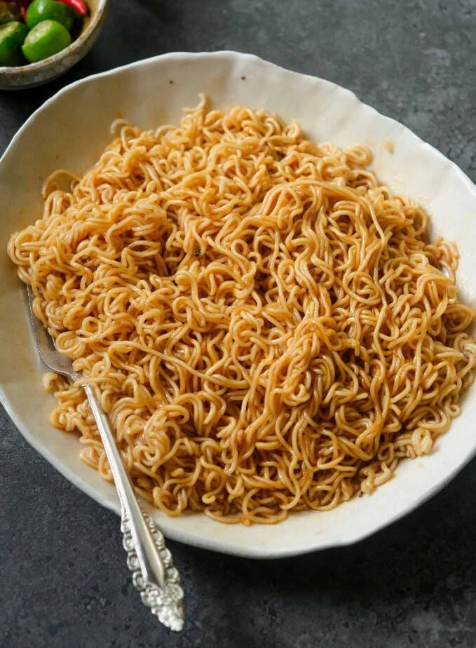
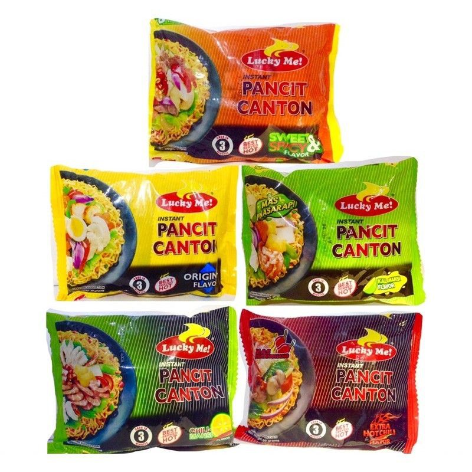

Pancit Canton

Pancit Canton, a popular afternoon snack within the Philippines. It is an instant noodle brand made by LuckyMe. Pancit Canton is easy to make and one you can munch on to pass the hunger. It can be paired with different foods to make it much more livelier. It is suggested to also eat Pancit Canton in moderation as it is full of preservatives that might harm the body
Ingridients

Pancit Canton comes with different flavors and there are 5 of them, namely:
- Sweet and Spicy, the orange one
- Original Flavor, the yellow one
- Calamnsi(lime) Flavor, the light green one
- Chili-mansi Flavor, the dark green one
- Extra Hot Chili, the red one
Personally, I like the Sweet and Spicy Flavor. It is my all-time favorite.
Then for the ingridients:
- Choose a pancit canton flavor of your choice
- Water
Additional Ingridients
- Sliced Bread
- Onions
- Sunny Side-Up Egg
Equipment
- Cooking Pot
- Laddle
- Strainer
Steps
Usually in the package of Pancit Canton, instructions on how to cook can be found there. I will just lay here my instructions as this is just how I usually cook it
- Boil water in a pot
- Take out your Pancit Canton of choice from its packaging and separate the flavoring packs from it
- If the water starts boiling, lower the heat and add the instant noodles inside. Cook it for around 2-3 minutes. Make sure to not overcook the noodles since it cooks fast.
- While waiting for the noodles to cook, grab a serving bowl and add the flavoring packets there.
- Once the noodles are already cooked, grab the strainer and start separating the noodles from the water carefully as it is boiling hot!
- Place the noodles in the bowl with the flavorings and mix thoroughly then you're done.
- During serving, you can add any additional ingridients to your Pancit Canton as they are quite the match. It just depends on what you like, so you should try them and maybe you'll love them. As for me, I like to pair my Pancit Canton with the Sunny Side-Up Eggs.